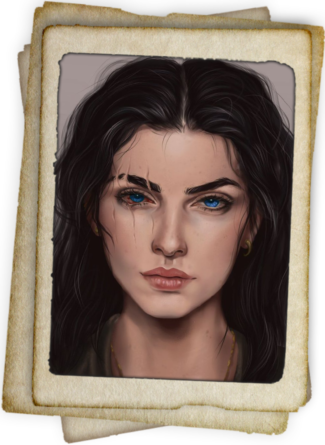

Lysara von Vinea
Titel: Herrin der Gezeiten, Wächterin des Nordostens
Alter: Mitte 43
Rasse: Human
Herkunft: Stadt Vinea, Viloria
Erscheinung: Lysara ist eine beeindruckende Frau mit mandelförmigen, ozeanblauen Augen, die den Eindruck von Tiefe und Geheimnis vermitteln. Ihr Haar ist tiefbraun mit goldenen Strähnen, die wie Sonnenlicht auf Wasser schimmern. Sie trägt oft praktische, aber dennoch elegante Kleidung aus wasserabweisenden Stoffen, geschmückt mit Symbolen des Meeres und der Schifffahrt.
Hintergrund
Lysara wurde in Vinea, der größten Hafenstadt von Viloria, geboren und wuchs inmitten des geschäftigen Handelslebens auf. Als Tochter einer alteingesessenen Adelsfamilie, die seit Generationen den Hafen verwaltet, wurde ihr die Verantwortung für die Stadt und ihre Bewohner früh nahegebracht. Vinea, das an der Nordostküste liegt, ist das Tor von Viloria zur Außenwelt und der wichtigste Umschlagplatz für Waren und Ressourcen.
Lysaras Familie hat stets enge Verbindungen zur Krone von Viloria gepflegt, doch sie hat sich ihren Ruf durch eigene Leistungen verdient. Nach dem frühen Tod ihres Vaters übernahm sie die Leitung des Hafens und der umliegenden Regionen, obwohl sie damals noch sehr jung war. Durch ihre Entschlossenheit und Intelligenz gelang es ihr, Vinea zu einer der einflussreichsten Städte des Landes zu machen.
Rolle und Verantwortung
Als Herrin von Vinea ist Lysara sowohl für die Verteidigung der Stadt als auch für ihre wirtschaftliche Blüte verantwortlich. Ihre Position ist einzigartig, da Vinea nicht nur als Hafenstadt, sondern auch als strategische Festung dient, die das Reich vor möglichen Bedrohungen aus der unbefleckten Wildnis und von der See schützt.
Lysara leitet die mächtige Flotte von Vinea, die sowohl für den Schutz der Handelsrouten als auch für die militärische Sicherheit zuständig ist. Unter ihrer Führung hat die Flotte zahlreiche Angriffe von Piraten und anderen Gefahren abgewehrt, was ihr unter den Seeleuten und Soldaten großen Respekt eingebracht hat.
Ihr geschicktes Management hat Vinea zu einem Dreh- und Angelpunkt für den Handel gemacht. Sie hat neue Handelsverträge mit benachbarten Nationen ausgehandelt und die Beziehungen zu den anderen Städten von Viloria gestärkt. Ihre Fähigkeit, wirtschaftliche Interessen und militärische Stärke in Einklang zu bringen, hat sie zu einer der einflussreichsten Persönlichkeiten des Landes gemacht.
Persönlichkeit und Führungsstil
Lysara ist bekannt für ihre pragmatische, aber zugleich empathische Art zu führen. Sie ist eine Frau der Tat, die sich nicht scheut, selbst an vorderster Front zu stehen, sei es in einer diplomatischen Verhandlung oder bei der Verteidigung ihrer Stadt. Ihre Entschlossenheit und ihr strategisches Geschick haben ihr den Respekt ihrer Verbündeten und die Furcht ihrer Feinde eingebracht.
Trotz ihrer Macht und ihres Einflusses ist Lysara ihren Wurzeln treu geblieben. Sie pflegt enge Verbindungen zu den Seeleuten und Händlern, die das Rückgrat von Vinea bilden, und sorgt dafür, dass ihre Stadt stets auf eine solide Basis gestellt ist. Sie hat ein Gespür für die Bedürfnisse des einfachen Volkes und bemüht sich, die Balance zwischen Wohlstand und sozialer Gerechtigkeit zu wahren.
Verbindung zur Königsfamilie
ysara hat eine besondere Beziehung zu Aurion Viloria. Obwohl sie loyal zur Krone steht, ist sie sich der Gerüchte um den ewigen König bewusst und behandelt ihn mit einer Mischung aus Respekt und Vorsicht. Ihre Position als Herrin von Vinea gibt ihr eine gewisse Unabhängigkeit, doch sie weiß, dass ihre Stadt letztlich Teil von Aurions Reich ist.
Im Gegensatz zu ihrer Beziehung zur Krone ist Lysaras Bindung zu ihren eigenen Kindern von viel tieferer Bedeutung. Als Mutter steht sie immer wieder vor der Herausforderung, ihre Verantwortung als Herrin von Vinea mit der Sorge um das Wohl ihrer Familie zu vereinen. Sie ist besonders stolz auf ihre Kinder und ihre Entwicklung, wobei sie jeden von ihnen auf seine eigene Weise auf das Leben in der Stadt und die Anforderungen ihrer Position vorbereitet. Ihre Kinder sind die nächsten Generationen von Vinea, die die Stadt in eine neue Ära führen sollen, wenn ihre Zeit gekommen ist.
Es gibt allerdings Spannungen, da ihre Kinder, insbesondere die älteren, gelegentlich ihre eigenen Ambitionen hegen und sich mit den politischen Strukturen innerhalb von Vinea auseinandersetzen. Einige von ihnen träumen davon, mehr Einfluss und Macht innerhalb des Reiches zu gewinnen, was zu Konflikten führen kann, da Lysara einen eher pragmatischen, auf den Schutz und das Wohl von Vinea ausgerichteten Ansatz verfolgt. Dennoch bleibt sie eine überlegte Mutter, die stets zwischen den persönlichen Wünschen ihrer Kinder und den politischen Notwendigkeiten von Vinea abwägt.
Vermächtnis und Zukunft
Lysara wird von vielen als Vorbild gesehen, insbesondere von jungen Frauen, die ihre Entschlossenheit und ihren Erfolg bewundern. Ihr Name ist in ganz Viloria und darüber hinaus bekannt, und ihre Taten haben die Bedeutung von Vinea für das Reich weiter gestärkt.
Obwohl sie öffentlich nur selten über ihre Träume und Ziele spricht, ist klar, dass Lysara bestrebt ist, die Zukunft von Vinea und Viloria langfristig zu sichern. Ihr strategischer Weitblick und ihre unermüdliche Energie machen sie zu einer Schlüsselperson in der Entwicklung des Königreichs.
